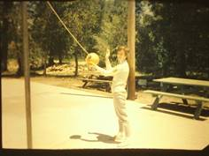
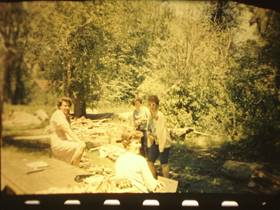
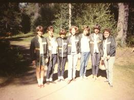

Chapter 11 – STAKE YWMIA & CAMP BEAVER
In February 1965 I was called in to the Stake President's office to see Brother Smout of the High Council and President Thompson. I knew it must be to take a stake M.I.A. position because that is what they are over, but I thought it might be secretary or a class teacher. Boy, was I ever wrong. They asked me to be Stake Young Women’s Activity Counselor under Sister Myrene Dransfield. I was so shocked I could hardly drive home. When I told Ken, he told me he didn't think I should take it as it would require too much of my time, and besides my nerves weren't the best when I was in an executive position in the ward. I called and talked to Dad and Mom and Mom didn't know whether I should take it or not. When I talked to Dad about it before I made my decision, Dad said if it was him, he sure would accept it as he really enjoyed stake work. He liked going around and visiting the wards & getting to know more people in the stake. I had to call President Thompson that night and tell him my decision as they wanted to put me in during stake conference on Sunday. I prayed about it and the more I thought about it and talked with Ken, we decided I should take it because if that was what the Lord wanted me to do, then I should do it. I was sustained during the second session of conference. That night they were having their stake speech festival so Sister Dransfield asked me to come and help greet at the door and sit up with the rest of the executives. I replaced Jean Edwards. Myrene told me that when President Thompson asked who she wanted to replace Jean, she told him she wanted me. President Thompson told her that he didn't think my Bishop would let me go and that she had better have a second name. Mike (that was her nickname) said she told LaRae what President Thompson had said so they both thought and prayed some more, but couldn't come up with another name so they knew the Lord wanted me in this position. President Thompson told me that they ask the Bishops and if the Bishops say the person is needed in the ward, he tells them the stake needs them and is taking them. I heard later that this is what happened.
I have had many wonderful and rich experiences during the time that I was activity counselor. I loved Mike right from the beginning. She was almost my mother's age. I have never seen a woman so enthusiastic and one who would devote as much time and work to her position as she did. She was a remarkable leader. She could make money stretch further than anyone I have ever seen, and get the most out of the money she did spend. She could get people and girls to do things that very few people could. She could get up and talk and the words would just flow out and the things that she would say would be so timely and appropriate. I learned a lot from Mike and she will always be a wonderful friend. I enjoyed working with LaRae Brown, the age group counselor also. She is a very efficient person and she really knows the MIA program. She is really quite the conversationist. You usually couldn't get a word in edgewise when she was around, but she is a wonderful person. The women on the board were really wonderful, especially my activity directors. They were: JoAnn Draney, Speech and Drama; Charlene Price, Music Director; Deanna Clark, Dance Director and Marion Smout, Sports and Camp. JoAnn was very good, but she had to be prodded along. I worked with her mainly on the roadshow preparations - rules, judging sheets, theme, etc. Ken helped me a great deal also. At the April Leadership Meeting we had all the activity counselors, speech, drama, music and dance directors meet together and we handed them out the rules and thoroughly discussed them so that they could get busy on their individual roadshows and have them ready for July 26th, the date scheduled for the presentations of the roadshows. The roadshows went off very well. Each ward had a roadshow, and Harrisville won the Superior rating. Lomond View came next. They only lacked a couple of points from being first. They had put in so much money into their roadshow that when they didn't win they were really bitter. They did have a cute roadshow, but Harrisville went along better with the main theme "Pipe Dreams" and thus received the most points from the judges. Mike and the rest of us were really disappointed with the way Lomond View acted. I also worked with JoAnn on the skit to be presented in April Leadership for June Conference. It turned out really cute. I also helped her with the Theme Presentation that was put on in September 65.
I liked Charlene, but I would get upset with her some times because she would wait until the last minute to get things done. She started worrying about them early enough, but it seemed that they didn't get done until the last minute. She was very dependable at all her meetings, however, and I enjoyed working with her. I worked with her on the Stake and Region Music Festivals and they were both very successful.
Deanna is a very talented and dependable woman. She had a tough time, however, as her husband never supported her and was always giving her a bad time. I worked with her on the Teen Dances, Stake Dances and floorshows, and especially the Stake and All-Church Dance Festivals. We had an All Girl's Dance and two squares of Square Dancers participating in the dance festivals. Deanna taught them these dances and did a terrific job with them. She put in a lot of hours and work with rehearsals and everything. I made the posters, programs, helped with the decorations, planning, etc., for the Stake Dance Festival and I mimeographed rules, etc., for the dancers for the All-Church Dance Festival. Deanna is a wonderful girl, but she sure has a temper and she says what she thinks. She also put in many hours teaching dances during the instruction periods prior to the teen dances every Saturday night during the months of January,
February and March. She had to be released due to her health and her husband's insistence right after June Conference.
 Marian Smoot was my favorite activity director. It's funny because when I first met Marian my first impression was that it would be hard working with her as she is a Gym teacher at North Davis Junior High, and she is very efficient, dependable and skilled in her position as Sports Camp Director. I felt that I was inferior to her and that she would probably resent me being over her. Much to my surprise it was just the opposite. She went out of her way to support me in my position, and let me know in various ways that she respected me and was behind me. I think the world of Marian. I have never met a girl that was as efficient, as fair, as sincere, willing to go the extra mile and had such a sparkling personality as Marian. Everyone loved her, especially the girls. She was so dependable that I never worried for a minute about the projects and activities that she was over or working on, as to whether they would get done or not because they always did and usually better than I could have done them. Because of my fear of her resenting me, I didn't get too close to Marian until we started working and planning together for camp. While Marian was in school, Mike and I would wash, dye and crush egg shells for one of the crafts for camp. We also got most of the other crafts ready. Then at night, we would get together with Marian and LaRae and plan the menus, activities, work schedules, etc. Marian and I got together and planned our Campcrafter program for camp.
Soon after I was put in as Activity Counselor, Mike asked me if I would try to study and prepare to go down to the General Board Campcrafter Certification Campout the 27th, 28th and 29th of May to become certified so that we could start this program in our stake this year at camp. Marian wanted to go down also, but since school would not be out by then, she couldn't go. I was so busy with all the other activities, meetings, etc., that I didn't have too much time to prepare for this until that month. That month, especially the last two weeks, I really crammed. Phillis Martin was certified and she worked with me teaching me knots, lashing, map and compass, first aid, etc. Phillis lived in the ward I grew up in and was in the MIA part of the time when I was a teenager. Shirlene Larsen, the Stake Camp Director from the North Weber Stake (the stake that shares our camp) went down with me to be certified. I have never in my life spent a rougher three days, but I wouldn't trade those experiences for anything. Thursday night from 5 p.m. until 11:30 p.m. we went around to the various groups for oral testing. By the time that night was over my head was spinning and I felt as if I was in another world. I passed everything, however, much to my surprise. Friday morning, we had to be at the Grand Central Parking Lot at 7 a.m. I spent Thursday night with Aunt Enid and Uncle Wayne. They were surely wonderful to me. Shirlene spent the night with her brother and his wife. I drove her over and went and got her the next morning. We traveled from Grand Central in a caravan to Tracy Wigwam camp where we put our packs on our backs and took our hike. We arrived at a campsite with no facilities. We set up camp - pitched our tents, built latrines, wood piles, tables, coolers, dug pits for our underground coolers, etc. Next, we cooked our lunch and went on our map and compass hike. When we returned we had to hike down for water and prepare a skit for the campfire program that night. We were divided into groups when we registered Thursday night. The girls and women in my group were wonderful especially one from Brigham who was also their Stake Activity Counselor and was about my age. We enjoyed each other's company very much. The campfire program that night was really great. The next morning at 6 a.m. we had testimony meeting. That was truly a wonderful experience in itself. The testimonies of those women were beautiful. The spirit was very strong. I was able to bear my testimony also. After the meeting we built our fires including the one using no matches. It took me quite a while to get mine going and to take care of it so I didn't have much time for my breakfast. Next, we took our nature hike. On this hike we made our observations and taught our songs to one another. We cooked our lunch on our hike. When we got back, we broke camp, and took our written tests. When I arrived home, I was filled with a wonderful feeling for the wonderful experiences I had had, but I was also so tired that I was about sick. Ken said I looked pretty awful. I was sunburned, had blisters, dirty everywhere, etc. Mike had tended Sandy for me while I was gone. She said it was the least she could do. I didn't get my letter telling me what level of achievement I had passed for almost a month. They said it should only take about a week, boy was I ever anxious waiting for that letter. Mike and Marian were also anxious. When it arrived, I was so thrilled I could hardly see, for I had passed all four years, I had achieved the level of Adventurer. Mike, Marian and everyone was very happy and excited, but not as excited as I was. This picture is of Me, Mike, Marian & one of the other ward leaders, at Camp Beaver.
Our stake camp was called "Camp Beaver". It was up past Huntsville and up South Fork canyon. It was a beautiful camp. It had a river running on the north of it. The girls used to play in it and float on inner tubes during their free time. It had cabins, a large cement slab the size of a basketball court where we played volleyball, ate on picnic tables in good weather, (when it was bad weather, we had another building where we cooked the food and it had tables and benches and would hold about 60 people.) We also held our activities on that cement slab. It had a big fireplace where we would cook food for some meals, it had a big fire area with logs around where we would gather each night to have a campfire program and the last night we would have our testimony meeting. That was always the highlight of camp as it was so spiritual. Most all the girls and leaders would bear their testimonies and the spirit was so strong. There were large sinks and mirrors outside the kitchen building where girls and leaders would wash their hair. It was a wonderful camp with lots of trees. I loved it there.
The three cabins each held about 20 people. There were cots with mattresses for 20 - so the camp held about 60 people which meant we had to have the Laurels go up one week, the Mia Maids go up another week and the Beehives also a separate week. That meant I was gone for three weeks each year at camp. The leaders would go up Sunday night so we could be up early Monday morning to be ready when the girls and ward leaders arrived. We would go home Friday afternoon. I would wash clothes on Saturday and go with Mike to buy the next week's groceries for camp. Sometimes Mike would have the other counselor go with her. When the third week was over, I was beat and had really missed my family.
The first week I went to camp was the hardest because I was the only one certified and I had to certify everyone else. The first week I passed Mike and Marian off along with the girls - so the 2nd and 3rd weeks Mike and Marian were able to help me pass off the girls and leaders. That first week all I heard was "Mae" (I was young then and didn't particularly want to be called "Sister Browning"). Some called me that anyway to show respect. Anyway. Since I was certified, they needed to pass everything off to me. I had the ward leaders help me teach first aid and bandaging, and other certification requirements. Marian and I had the stake camp staff help us with the activities and campfire programs. The girls enjoyed the hikes and most of the certification requirements, but would rather have had more time to play than they did, so the next year we had the wards teach their girls some of the requirements and then they just had to pass them off at camp. Anyway, back to that first week, I was worn to a frazzle trying to help all the girls and leaders with certification, running from one to another. Finally, Mike called me into the kitchen cabin and told me to lie down on one of the far benches. She had a blanket and pillow on it. I did and then she scooted the table over by me and the tablecloth went down almost to the floor - so no one could see me there. When the girls were shouting for me, her and Marian told them I wasn't available to help them for awhile. That way I got to have a short nap each day which really helped. Marian and I had fun with the girls. We even had shaving cream fights and water fights. Someone brought "itching" powder and put down Marian's neck. It was awful, about drove her nuts for awhile. They didn't try that again.
 The first year we only passed off the yearling level (lst level). The following year we passed off the 2nd level (Mountaineer) to those who had passed the "yearling" the year before. The third year, we passed off the 1st, 2nd and 3rd levels and the fourth year we passed off all four levels.
One of the best parts of camp was having Jr Camp Counselors. I would ask the wards to give me a list of their oldest girls and I would pick one from each ward to be a Jr. Camp Counselor. I would have them come to my home where I would teach them the next level of certification and we would go on a pre-campout where they could pass off this certification so they could help Marian and I teach and pass off this certification at camp. Marian and I became really good friends by working so closely together on camp and we became close with these Jr Camp Counselors as we taught and trained them, went on the pre-campout and then worked together at camp. They were special girls and were a lot of help to us. This picture is of me (2nd from left) and my Jr Camp Counselors.
The Jr Camp Counselors for the fourth year at camp were my favorites. I had asked Tammy to help me with camp that year. She consented to be over the lst year (Yearling) certification - so we went to camp with me the first week. She also consented to go with me and the Jr. Camp Counselors to the Pre-Campout. We had lots of experiences there. We picked two tents. Half of the girls were in one tent with Tammy and the other half in the other tent with me. I don't remember Marian going with us on this campout. We heard noises outside the tent that night, but I assured the girls that it was probably just squirrels or other small animals. The next morning, we found bear tracks around our tents. Later that day a forest ranger stopped by and asked us if we had seen a brown bear as it had been spotted at several campsites. We didn't sleep as well the next night, but he didn't come around, thank goodness. Tammy had brought Larry's pistol so in case we needed it - we did. On our hike we ran into a rattlesnake and Tammy shot it. Even though we had a lot of excitement, we also accomplished a lot and had a lot of fun also. We had a big water fight just before we left camp. These Jr. Camp Counselors presented Tammy and I each with a book of favorite quotes at the regular camp. (I don't remember the name of the book, but I should still have it.) On the inside cover, the girls had gotten together and composed a poem about our pre-campout. It told about the bear, rattlesnake and water fight. It was really cute and I have treasured that book. (Guess I will go down and look for it in the bookcase.)
The first year we had some problems with the older girls. We had set rules, one of which was that boys were not allowed in camp and that the girls were not allowed to leave the campground unless, of course, their parents came to get them as a couple did who were going on vacation. We told the girls that if any girl should invite a boy up or entice him into the campground, she would be taken home. Well, sure enough, they tested us by doing it one night. They snuck out of camp, met their boyfriends and were necking with them just inside the campgrounds. We took the two girls’ home the next morning. We didn't have trouble with any of the others after that.
We had a girl nicknamed "Scotty" with us. She was really a leader, but was leading the girls in the wrong direction. She was a troublemaker, and caused us some grief that first year. We decided that if she was coming the next year, we had to get her on our side - so we met with her and told her she was a "natural leader" and that we needed her to help us with camp. She was cooperative and liked the responsibility we had given her. That following year at camp was much better. If the girls would get rowdy while we were trying to teach certification, Scotty would either just glare at them, or tell them to "listen up - that they needed to learn these things" and they would listen. It was great to have her on our side. The last night at testimony meeting when most of the girls and leaders had born their testimonies, Scotty stood up. With tears streaming down her cheeks she thanked all the girls and leaders for being her "friends" and caring about her. She told the girls that if their parents are strict and put a curfew on them and want to know where they are going and what they are doing and want to meet their friends - that they should be grateful and thankful that their parents care about them. She said she wished her parents cared about her, but they don't. She said they don't care where she goes, how long she stays, what she does. She started smoking to "shock" them and see if they cared. They didn't. She then started drinking and going around with the wrong crowd, they still didn't care. She said they wouldn't care if I ended up in the reform school or jail - maybe they would be happy because then I wouldn't be around. It gave us all something to think about - and we felt so bad for Scotty.
(More about camp - hope it isn’t a repeat, but not time to keep going through this rough draft at this time). Camp Clean-Up was the 26th of June. We started at 8 a.m. in the morning. There were to be 4 women and 2 men from each ward and all the stake board. Everyone brought part of the lunch. While the rest were cleaning the camp, Marian and myself, with the help of Brother Swaner, prepared the fire displays and woodpile for our campcrafter program.
Monday morning at 5:15, Marian stopped by to pick me up. We told the girls that they could be there at 6:00 a.m. so we had to be their a few minutes early. It was quite chilly at that time of the morning. We had the girls go into the kitchen where Mike explained the rules of the camp - what was expected of them etc. They went to their cabins, picked out a bed and spent a few minutes getting settled. Mike, Marian, and myself were each in a different cabin. We also had two ward leaders in each cabin. After everyone was situated in their cabins, we had them come up and register, check in crafts and written reports for the campcrafter program and they were assigned to their work details. Breakfast consisted of rolls and hot chocolate, afterwards everyone got busy on their work details and then straightened their cabins. Marian and I tore the material for the lunch sacks. At 9 a.m., they came up to the outside tables and make their lunch sacks. Marian explained the campcrafter program to them and we passed out their campcrafter booklets for them to study the rest of the morning and whenever they had time. At ten, while the girls were studying, Marian and I taught the leaders their various fire demonstrations to be presented in the afternoon. Lunch was served at noon on paper plates and cups so that immediately after, we could go ahead with the campcrafter program. At two the girls were allowed to play in the river or do crafts. At five we had supper, 6:45 p.m. we took the flag down, and at seven we had our relays and junior Olympics. The girls enjoyed these and had a lot of fun. Afterwards we showed films of last year's camp and of June conference for this year. We woke the girls at 6:45 a.m. Tuesday morning. They moaned and groaned, but they finally got up. Flag ceremony was at 7:30 and breakfast followed. We cooked pancakes, bacon and eggs on the outside grills and ate outside. It was a beautiful morning. After breakfast everyone had their work details to do, then straighten their cabins, and afterwards everyone that didn't have a hat, had to come up and I helped them make a wallpaper hat. While I was doing this, Mike and the other leaders were preparing the items that the girls were to take on their hike for their lunch. At 9:30 everyone came up to the kitchen in their hiking clothes and gathered up their lunch, put it in their lunch sacks that they had previously made, and at 10:00 we left for our hike. Mike and one or two of the ward leaders stayed to get things ready for supper. Marian and I led the way and the other leaders were scattered throughout the line, but the last week as we were anticipating trouble, Marian led the way and I brought up the rear. The hike led the girls through creeks, where we had to cross by way of large rocks or a log. We had to go through fences and bushes, but finally we arrived at the Weber Memorial Park. The first week the girls built their individual fires in a large clearing at the park, but the other two weeks we had them build their fires out in the parking lot before we left for the hike. We cooked our lunch and ate, and by then the girls were ready to return to camp so that they could play in the river. At 6:00 we had supper and at 7;00 we had a Forrest ranger come and show films and talk to us about fires and conversation. This was our program for M.I.A. We met over at the campfire, however, at 7:30 for our opening exercises and afterwards we went back and sang songs around the campfire. Every night we took one cabin and taught them north by the stars and how to make a bedroll.
On Wednesday morning we arose at 7:00, flag ceremony at 7:30, breakfast right after. Then work details and cabins to be straightened. Between 10 and 11 we taught the leaders First Aid. Marian taught a couple of the leaders, and I would teach the other two, then each of us would prepare for our demonstrations. Lunch was served at noon, and our campcrafter program was from 12:45 to 2:00. The girls played in the river and worked on arts and crafts until around 5 p.m. The girls were given sweet rolls that Mike and some of the ward leaders had made during the day, to tide them over until our Hawaiian luau. Between 6:00 and 6:30 we took down the flag, then we had the girls get in their groups and we gave each leader some balloons, create paper, tape and other decorations and each group was to decorate a forth of the slab for our Hawaiian Luau. The girls were really clever, they really had some darling ideas. One week they made a Hawaiian girl out of a broom, mop, pillows, crate paper, and some of their clothes. They also made palm trees, a boat, a hut and various other decorations. Each week they really made the slab look like Hawaii. After we were finished decorating, we played Tin-A-Ling (Japanese hop scotch), Lummy sticks and they did the Limbo. At eight we had our luau outside on the tables which were lined up down the middle of the slab and decorated. We barbecued a half of a chicken for everyone. We had tossed green salad, cicabobs, rolls, orange drink and cake with lemon sauce. One week, we had the stake presidency and their wives and other high council members and visitors come up for our luau. This was really a success and one of the main highlights of the week. After, if it was late enough they would go to their cabins and finally go to sleep. One week it was too early so Marian took them over to the campfire and led them in songs and they told scary stories. Mike and I didn't go down as we were tired and were doing other things. The girls thought that we were dressing up and would come up out of the river to scare them since they were telling scary stories. They heard some noises and started screaming and running - so they ran to the cabins and hid under their covers. Mike and I wondered what was going on when we heard the screaming and girls running everyone. Marian came in and told us what had happened.
Thursday morning, we were up bright and early at 7:00. The girls didn't think that this was such a good idea. They wanted to sleep in - so Marian, Mike and I had to do as we did every morning; go in each of the cabins several times, banging on pans, tickling them, pulling down their covers, etc. After flag ceremony, breakfast and while the girls were doing their work details and straightening their cabins, Marian and I taught the leaders the remainder of the First Aid and north by the sun. Lunch was at 12:00. After the campcrafter demonstrations, Marian and I started testing the girls orally. The first week I had to test all the girls by myself as Marian wasn't certified. Boy was I every exhausted when I finished. The other two weeks it wasn't so bad as I only had to test half of them. We just spot checked them on their requirements and all that they had learned during the week. While one group was being tested the other groups played in the river. We had supper at 5:00 and afterwards we gave the girls their written test. Following this we had our testimony meeting which was always so inspirational and wonderful. We all sat on the logs around the campfire and listened to each other bear our testimonies. The second week every girl and leader bore their testimonies. The girls went down to their cabins after our Miss Eager Beaver was awarded and the closing prayer was said. The last week we gave Mike a stuffed bear to remember us as her nickname was "Mother Bear". The first week, the first year Beehives gave Marian the nickname of Daddy Bear, I was Mama Bear, and Mike was Big Beaver. Thursday night was sad for the girls as this was the last night they would be at camp as the next morning they would be leaving for home. They would miss the friends they had made at camp, this way of life, and all the fun and wonderful experiences they had had. Some of the girls, especially the first year Beehives cried half the night. We didn't think we would ever get them to settle down.
Friday morning. we got the girls up early, had cereal and toast for breakfast, and assigned them their duties for that morning. Some had to clean cabins, some had to clean tills and pick up all around, others had to defrost and clean the fridge, and still others had to mop and wax the kitchen floor. Their parents and leaders came up to get them around 10:00. Mike, Marian and myself were usually there until noon getting things ready for the next week and making our new grocery lists. When we got home we had to do our washing and ironing, clean house, fix casseroles and cakes, etc., for our families to eat for the next week. Mike's mother-in-law did her washing and ironing - so she got the groceries and other items we needed. Three weeks at camp plus all the time preparing for it, took up most of the summer. It was a sacrifice, but I loved it at the time because I loved everything about camp - the girls, ward and stake leaders I worked with, camping and having fun along with all the work.
Since I was the only one certified, whenever anyone got hurt, didn't feel good, or were just teasing, they would yell "Mae". They thought that since I was certified and had a sleeve patch that I should know everything and know how to do everything. The first week we had more than our share of accidents so I was running to one or another a lot of the time. Finally, Marian got disgusted and told them to come and find me instead of yelling for me all the time.
The girls or "ladies" as Marian called them were really a lot of fun and cute kids. They brought shaving cream, silly soap, honey, saran wrap, catsup, cereal, rice and many other things plus lots of squirt guns to play tricks. We told them that they could play tricks and have fun as long as it didn't hurt anyone and for everyone to be good sports. We had to be good sports to as they were always throwing us in the river, or putting shaving cream and silly soap all over us. They used the honey, saran wrap, and catsup etc., for the tills and un screwed the light bulks so that when someone came down to use them, they would sit in this mess. We always had to take our flashlights when the three of us went down at night. The three of us were always the last to go to bed as we would stay and talk up in the kitchen or get things ready for the next day until the ward leaders got the girls quieted down. When we went to bed we would usually find all kinds of goodies waiting for us, such as our sleeping bags sewed together, or full of cereal, rice, rocks, grass, etc. The first week, the girls were continually putting shaving cream on us or doing something, so Marian and I decided to pay them back. Wednesday night after the Luau and the girls had gone back to their cabins, Marian and I filled our squirt guns and took some matches to light the small firecrackers she had brought and went down to the cabins. We locked the doors from the outside and went around to the back where we put the firecrackers under the doors and squirted through the windows. The girls thought it was boys and they really got scared. They started screaming and yelling so we unlocked the doors and tried to keep a straight face and went into the cabins and told them that we would go scare the boys away and for them to quiet down and go to sleep. Apparently, they didn't believe us and guessed who the boys were because the next day they ganged up on us. First, they threw Marian in, then they grabbed me. Marian tried to stop them so she got thrown in again. We really gave them a fight for it though, and we threw several of them in. Darla, Mike's daughter, sat there laughing. She was the one that roused them up and then she sat there watching and letting them do all the dirty work - so we grabbed her. I've never seen such a wildcat, she kicked and fought and both Marian and I thought we would never make it to the river with her, and when we did we sunk down on the bank huffing and puffing. Mike saw us grab Darla so she ran and got her movie camera. She told the ward leaders that Darla would really give us a fight for our money, and boy she did. That afternoon I went down to my cabin for something and there was my sleeping bag hanging from the rafters. It was sewed together and filled with goodies of all kinds. Marian's was about in that shape too. We also got our fill of shaving cream, etc., that day. The next week Marian and I decided we'd better not try that trick again, but the last week the girls were asking for it again, and since it was our last week we decided to live dangerously again so we cut up onions and put them in the pillow cases of some of the girls who had been the worst - Pam, Scotty, Chris and a few others. It took them until the next night to figure out who did it, but they just blamed Marian. They thought I was too sweet and nice to do it, so after Testimony meeting they grabbed her and dumped itching powder down her back. I tried to stop them, but was too late. It was like little slivers. They really started to bother her so we ran up to the kitchen, she threw her blouse off and I tried to gently rub it off and wipe it off with a damp cloth. Finally, I had to pick some of them off.
Marian brought her skate board up to camp and whenever she got a few minutes which wasn't very often, she would ride around on it on the slab. She tried to teach me how to use it, and I have to admit it is quite fun.
We had a couple of incidents with snakes. The first Monday we were up there, Marian and I took off around 4 p.m. to make sure of the trail that we were going to take them on the next morning for their three-mile hike. As we approached the memorial park we were walking in tall grass. I went to take a step and just about stepped on a blow snake. I jumped and almost landed on another one. From then on, I let Marian take the lead. The other incident was when the girls found a water snake and tied it down from the rafters just in front of Marian's bed. That day after we got out of the river the girls in that cabin could hardly wait until Marian got down to her cabin. Mike found out about it and motioned to me to go over where she was. She told me to tell Marian as she was afraid it would really scare her. I told her, but she really put on a good show for them pretending she didn't know it was there.
Mike hated the river so she never got in it unless the girls threw her in. Marian and I really enjoyed it though. It was great fun floating down it on inner tubes. There were only a couple of days each week that we had time to get in it, but when we did, we really took advantage of it and had a ball. We made trains with the girls and went down that way some times.
One day Marian and I were so beat, and you couldn't get any rest in the cabins so Marian suggested that we get out pillows and put the benches under the tables and go to sleep on them. The table cloths were down low enough so no one could see us so we were able to get a little rest that way. When we got up we were a little stiff though as the benches were really hard. Some of the girls came looking for us, but Mike was always such a good sport and she told them to look elsewhere for us.
Every night while we were sitting visiting we would snack on left over doughnuts, cookies, cup cakes, etc.
I really love camp. I enjoyed the time I spent up there very much. I grew to love Marian and Mike very much, also the other ward leaders and all the girls. You can get so close to the girls at camp. This is one of the reasons I enjoy it so much.
Sometime later, Myrene Dransfield (Mike) was moving from the stake. She told me she thought I would be asked to be the next Stake Young Women's President. I told her I hoped not because Ken was feeling that he and Sandi had been neglected and he wanted me to be released. I also told her that I didn't want that responsibility. She said "Mae, you try to please everyone and you can't do that. You can only please half the people half the time, so you might as well please yourself and you will please half the people". That was the way with Mike. I loved her, I thought she was great, but there were others who didn't like her. She was a great leader and I am thankful I had the opportunity of serving with her. She was not only was a lot of fun, but she loved the Lord and loved the girls and sacrificed a lot for them. I got close to her children also - who were not much younger than I was. Mike & her husband, Ed, had a boat and water skis and they invited Marian and her husband, and Ken and I to go water skiing with their family sometimes. That was great fun. I met Darla (Mike’s oldest daughter) while working at David School District. Darla was a social worker for the schools and had come in to see about classes to get her lane change. I recognized her almost immediately, and she did me. We hugged and updated each other on our families. Of course, Darla had married and had a family. She told me that Mike, her mother, had passed away unexpectedly and that her dad had soon remarried. She said his new wife didn’t want much to do with his family and was all about her family. Darla’s dad had gone along with what his new wife wanted, and Darla said that they hardly ever saw her dad since then, that he hadn’t been a grandfather to his own grandkids. That was sad to hear.
The lst counselor, LaRae Brown, was asked to be the Young Women's President and she asked for me to stay in with her. Ken asked me to please be released with Mike - so I did.
Mike and I were released at stake conference which was held at the Ogden Tabernacle. Ken & I came in and saw Marian sitting at the back of the tabernacle. We went over and sat by her and her husband. She said "Mae, I wouldn't sit way back here if I were you, it's too far to walk to the front when they ask you to speak". I said "they won't ask me to speak - maybe Mike, but not me. She said "don't say I didn't warn you". Well, they did call on both Mike and I to speak after they released us. It seemed like that was the longest walk I ever took. I should have listened to Marian.
Marian was sustained as the activity counselor. I was happy about that as I had grown to love her and she was really talented and efficient and a great leader. She was a school teacher too. Not long afterwards I got a call to meet with the stake presidency and they called me to be the stake camp director. Marian had asked for me. Now, we could still work together on camp and be there together, only the positions had changed. I now was under her where before she was under me, but that didn't matter. We worked great together with the help of the Lord. Shellie was born about this time - so one year I didn't go to camp, but I helped with it.